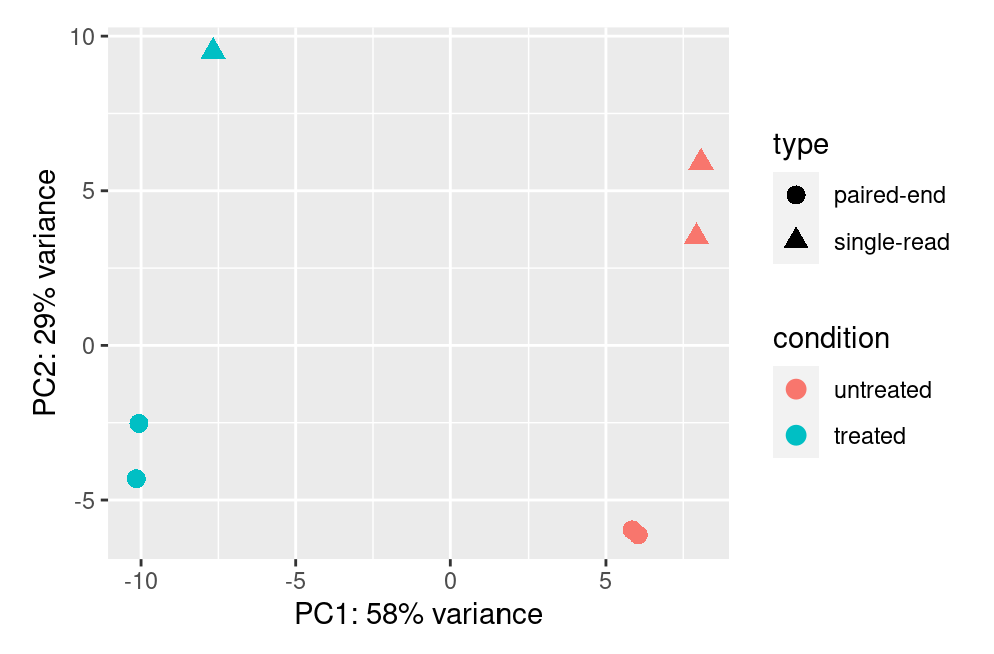

A basic task in the analysis of count data from RNA-seq is the detection of differentially expressed genes. The count data are presented as a table which reports, for each sample, the number of sequence fragments that have been assigned to each gene. Analogous data also arise for other assay types, including comparative ChIP-Seq, HiC, shRNA screening, and mass spectrometry. An important analysis question is the quantification and statistical inference of systematic changes between conditions, as compared to within-condition variability. The package DESeq2 provides methods to test for differential expression by use of negative binomial generalized linear models; the estimates of dispersion and logarithmic fold changes incorporate data-driven prior distributions. This vignette explains the use of the package and demonstrates typical workflows. An RNA-seq workflow on the Bioconductor website covers similar material to this vignette but at a slower pace, including the generation of count matrices from FASTQ files. DESeq2 package version: 1.37.6
Here we show the most basic steps for a differential expression analysis. There are a variety of steps upstream
of DESeq2 that result in the generation of counts or estimated counts for each sample, which we will discuss in
the sections below. This code chunk assumes that you have a count matrix called cts and a table of sample information
called coldata. The design indicates how to model the samples, here, that we want to
measure the effect of the condition, controlling for batch differences. The two factor
variables batch and condition should be columns of coldata.
dds <- DESeqDataSetFromMatrix(countData = cts, colData = coldata, design= ~ batch + condition)
dds <- DESeq(dds)
resultsNames(dds) # lists the coefficients
res <- results(dds, name="condition_trt_vs_untrt")
# or to shrink log fold changes association with condition:
res <- lfcShrink(dds, coef="condition_trt_vs_untrt", type="apeglm")
The following starting functions will be explained below:
DESeqDataSetFromTximport().
DESeqDataSet().
DESeqDataSetFromHTSeq().Any and all DESeq2 questions should be posted to the Bioconductor support site, which serves as a searchable knowledge base of questions and answers: https://support.bioconductor.org
Posting a question and tagging with “DESeq2” will automatically send an alert to the package authors to respond on the support site. See the first question in the list of Frequently Asked Questions (FAQ) for information about how to construct an informative post.
You should not email your question to the package authors, as we will just reply that the question should be posted to the Bioconductor support site.
Actual texts from the original website are skipped here.
Actual texts from the original website are skipped here. Insert my favorate image in the tutorial to show how images on this website will be displayed:
Actual texts from the original website are skipped here.
Actual texts from the original website are skipped here.
Actual texts from the original website are skipped here.
Actual texts from the original website are skipped here.
Actual texts from the original website are skipped here.
Actual texts from the original website are skipped here.